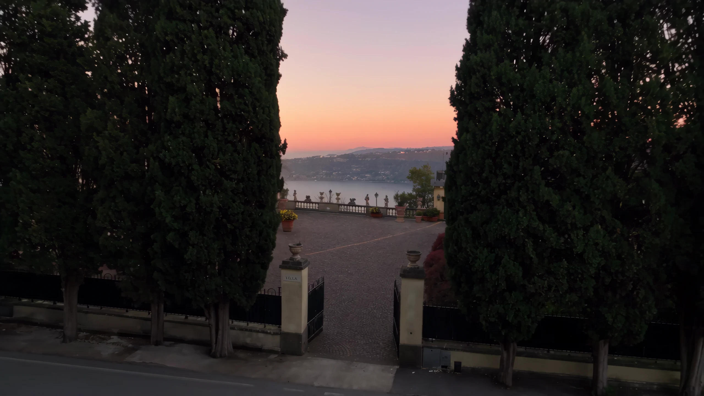
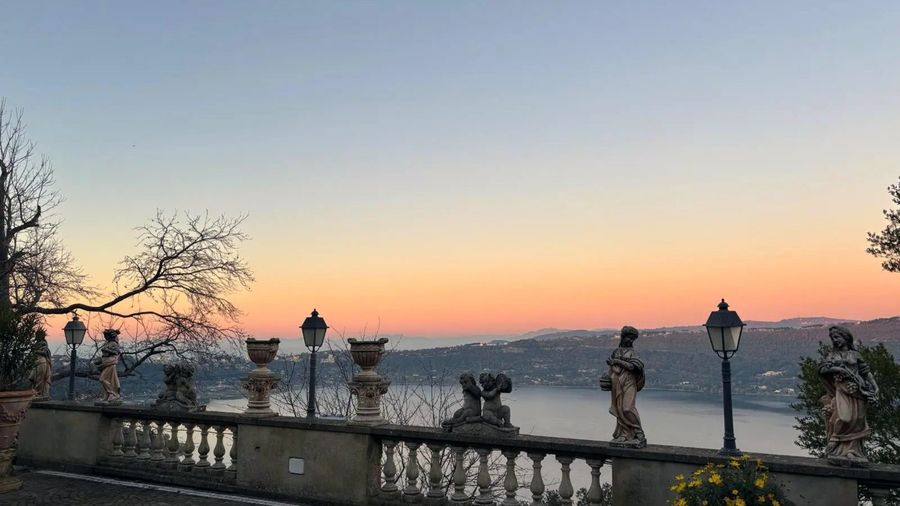
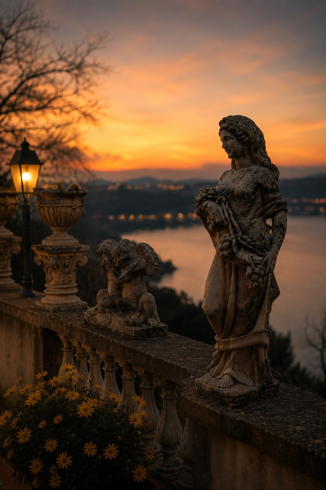
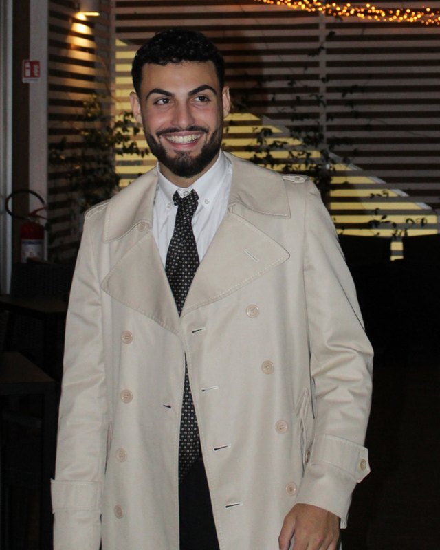

AI-generated video
Garden apartment with lake view in Castel Gandolfo
An 85 square metre apartment with a garden, a lake view and a panoramic terrace among the statues. Space and time, all to yourselves.

Above the lake, time slows down
From the balustrade your gaze drops over the garden and comes to rest on Lake Albano. In the evening the sun sets behind the hills and the terrace turns gold.
Like what you see?
Book your stay at Pio XIThe apartment
Living room, kitchen, bedroom and bathroom: 85 m² on one floor, with the garden right outside the door.
Spacious, cared for, ready to enjoy
Equipped private kitchen with coffee machine, washing machine, TV with streaming, bathrobes and a sofa. Tiled floors and a bedroom with wardrobe and chest of drawers.
The garden is the best part: step out and sit down. Pets are welcome and parking is free.
The rooms
What you will find

Castel Gandolfo and around
Castel Gandolfo stands on the hills above Lake Albano, south of Rome, and is known for the Apostolic Palace.
Nearby are Lake Albano, Lake Nemi and the Castelli Romani Regional Park, ideal for walks, kayaking and canoeing.
Getting to Castel Gandolfo
Castel Gandolfo is in the Alban Hills, about 25 km south-east of central Rome. By car, take the Via dei Laghi or the Appia; by train, the FL4 regional line from Roma Termini (towards Albano Laziale) stops at Castel Gandolfo.
Rome Ciampino Airport is 9 km away. Parking near the apartment is free, on the street.
Pio XI Garden & Lake View ApartmentViale Pio XI, 31b
00040 Castel Gandolfo (RM)
What guests say
27 reviews on Booking
The apartment is spotless, the view is fantastic and it was a really pleasant stay.Guest, October 2026, on Booking
Beautiful location and spotlessly clean.Guest, September 2026, on Booking
A lovely apartment with a lake view. Large and well equipped. Close to the centre.Guest, September 2026, on Booking

Your host
Giovanni Francesco D'Agostino
Host and owner of Pio XI, property manager
I’m Giovanni Francesco, the owner of Pio XI Garden & Lake View. I work as a property manager, looking after apartments for short stays, and I take care of Pio XI personally, from your first message to check-out.
I live in the Castelli Romani and know this area well: I answer your messages myself and tell you where to eat, what to see and when to go up to the terrace for the sunset.
Message me on WhatsAppBook direct. Get more.
When you book on the official site you talk to us, with no middleman: we answer ourselves, help with your dates and suggest what to see.
How it works
- RequestSend your dates and number of guests with the form.
- ConfirmationWe confirm availability and the total.
- Bank transferYou pay by bank transfer: IBAN and reference are in the confirmation email.
- Payment receivedWe check the transfer and send your booking confirmation.
You pay us directly, with no middleman. The booking is confirmed only once we have received the transfer and told you by email.
Frequently asked questions
Can I bring my dog?
Yes, pets are welcome. Tell us the type and size when you enquire.
Is there parking?
Yes, free of charge, on the street.
Is breakfast included?
No. There is a private kitchen, and the town has cafés and bakeries.
Are there stairs?
Yes, there are several flights of stairs to reach the apartment. If you travel with heavy luggage or have limited mobility, please write to us first.
Times and payment
Check-in 14:00-16:00, check-out 8:00-11:00. You pay by bank transfer after we confirm.
Where is the apartment?
At Viale Pio XI 31b, Castel Gandolfo (Rome), on the hills above Lake Albano, south of Rome.
How far is it from Rome and Ciampino airport?
Central Rome is about 25 km away. Rome Ciampino Airport is 9 km, Anagnina metro 16 km and Ponte Lungo metro 21 km.
Does the apartment have a lake view?
Yes. You can see Lake Albano from the property, and there is a garden; the panoramic terrace with its statues looks over the lake.